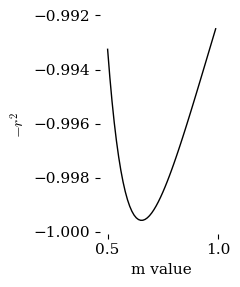
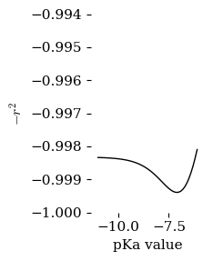
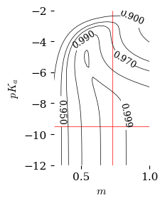

A Plot of \(k_{obs}\) vs. \(\%H_2SO_4\) or \(H_0\)#
This code will create the figure 2 in the discussion that plots \(k_{obs}\) vs. \(\% H_2SO_4\) and \(\log{k_{obs}}\) vs \(0.62H_0\)
##############################################################
### Set up libraries and global variables
##############################################################
import interpolators ### import the following functions from local library
# interpolators.MakeInterpolationFunctionForH0inH2SO4byPercentWt()
# interpolators.MakeInterpolationFunctionForH2OActivityinH2SO4byMoleFraction()
# interpolators.MakeInterpolationFunctionForH2OActivityinH2SO4byPercentWt()
# interpolators.MakeInterpolationFunctionForDensityofH2SO4byPercentWt()
import pandas as pd
pd.options.mode.chained_assignment = None # no warning message and no exception is raised
import numpy as np
import matplotlib.pyplot as plt
import scipy.stats as stats
from scipy.optimize import curve_fit
from scipy.stats import linregress
from scipy.optimize import minimize
from scipy.optimize import minimize_scalar
from statsmodels.nonparametric.smoothers_lowess import lowess # A function for interpolating a plot using the locally weighed scatterplot smoothing method. Returns smoothed x,y points
from scipy.interpolate import CubicSpline # A function for interpolating a plot using the cubic spline method. Returns an interpolation function.
from scipy.interpolate import interp1d # A function for interpolating a plot using the connect-the-dots method. Returns an interpolation function.
from scipy.interpolate import make_smoothing_spline # A function for interpolating a plot using a Bspline algorithm. Returns an interpolation function.
from matplotlib.patches import PathPatch
from matplotlib.path import Path
#github_location = "https://raw.githubusercontent.com/blinkletter/4410PythonNotebooks/main/Class_30/data/"
github_location = "./data/"
github_H0_location = "https://raw.githubusercontent.com/blinkletter/4410PythonNotebooks/main/Class_08/data/H0_data/"
github_location_styles = "https://raw.githubusercontent.com/blinkletter/LFER-QSAR/main/styles/"
github_location_LFER_tables = "https://raw.githubusercontent.com/blinkletter/LFER-QSAR/main/data/"
molwtH2SO4 = 98.08
molwtH2O = 18.0
densityH2SO4 = 1.83
densityH2O = 1.000
##############################################################
### DATAFRAME for ESTER HYDROLYSIS KINETIC DATA
##############################################################
##############################################################
### Import the data and perform calculations
##############################################################
Data_File_Name = "Yates_Table1.csv"
Filename = github_location + Data_File_Name
df = pd.read_csv(Filename,
delimiter = ",",
skipinitialspace=True,
# index_col="Substituent",
comment = "#")
#display(df)
df1 = (df.loc[df['Ester'] == 'MeOAc']) ### Select only the MeOAc data
#df1 = (df1.loc[0:7]) ### Select only the given lines
##############################################################
### Perform calculations
##############################################################
df1["kobs"] = df1["kobs"] * 1E-2 * 60 # convert from 10^-2 min^-1 to s^-1
#df1["kobs"] = df1["kobs"]
PercentH2SO4 = df1["%H2SO4"]
molesH2SO4 = PercentH2SO4 / molwtH2SO4
PercentH2O = 100 - PercentH2SO4
molesH2O = PercentH2O / molwtH2O
total_moles = molesH2SO4 + molesH2O
mole_fraction_H2SO4 = molesH2SO4 / total_moles
df1["X_H2SO4"] = mole_fraction_H2SO4
interpolatorH0 = interpolators.MakeInterpolationFunctionForH0inH2SO4byPercentWt()
df1["H0"] = interpolatorH0(PercentH2SO4)
m = 0.62
df1["HS"] = df1["H0"] * m
df1["log_k_obs"] = np.log10(df1["kobs"])
interpolator_aH2O = interpolators.MakeInterpolationFunctionForH2OActivityinH2SO4byPercentWt()
df1["aH2O"] = interpolator_aH2O(PercentH2SO4)
interpolator_density = interpolators.MakeInterpolationFunctionForDensityofH2SO4byPercentWt()
density = interpolator_density(PercentH2SO4)
volume = 1000
gramsH2O = volume * density * PercentH2O/100
molesH2O = gramsH2O / molwtH2O # per liter
df1["Molar_H2O"] = molesH2O
X_H2O = 1-df1["X_H2SO4"] # mole fraction H2O in H2SO4
gamma_H2O = df1["aH2O"]/(X_H2O) # activity coefficient for H2O in H2SO4
df1["Molar_aH2O"] = gamma_H2O * df1["Molar_H2O"]
display(df1)
| Ester | %H2SO4 | kobs | X_H2SO4 | H0 | HS | log_k_obs | aH2O | Molar_H2O | Molar_aH2O | |
|---|---|---|---|---|---|---|---|---|---|---|
| 0 | MeOAc | 14.1 | 0.9000 | 0.029243 | -0.597414 | -0.370397 | -0.045757 | 0.929987 | 52.275952 | 50.080484 |
| 1 | MeOAc | 20.7 | 1.5660 | 0.045716 | -1.040195 | -0.644921 | 0.194792 | 0.873649 | 50.434878 | 46.173255 |
| 2 | MeOAc | 28.3 | 2.5320 | 0.067544 | -1.509841 | -0.936101 | 0.403464 | 0.778187 | 47.988050 | 40.048746 |
| 3 | MeOAc | 34.8 | 3.8460 | 0.089215 | -2.000013 | -1.240008 | 0.585009 | 0.669057 | 45.575514 | 33.479526 |
| 4 | MeOAc | 40.4 | 4.8840 | 0.110638 | -2.419997 | -1.500398 | 0.688776 | 0.556795 | 43.253469 | 27.079348 |
| 5 | MeOAc | 45.4 | 6.2400 | 0.132397 | -2.794364 | -1.732506 | 0.795185 | 0.449615 | 40.989529 | 21.241846 |
| 6 | MeOAc | 50.2 | 6.8400 | 0.156117 | -3.232965 | -2.004438 | 0.835056 | 0.346623 | 38.651768 | 15.876097 |
| 7 | MeOAc | 55.2 | 7.9800 | 0.184424 | -3.780673 | -2.344017 | 0.902003 | 0.246010 | 36.023445 | 10.866097 |
| 8 | MeOAc | 60.4 | 8.2800 | 0.218701 | -4.399864 | -2.727916 | 0.918030 | 0.156488 | 33.057372 | 6.621126 |
| 9 | MeOAc | 65.2 | 7.1400 | 0.255866 | -4.997463 | -3.098427 | 0.853698 | 0.090901 | 30.074061 | 3.673729 |
| 10 | MeOAc | 70.4 | 4.3500 | 0.303858 | -5.736487 | -3.556622 | 0.638489 | 0.042284 | 26.559878 | 1.613275 |
| 11 | MeOAc | 74.1 | 2.2980 | 0.344289 | -6.255075 | -3.878146 | 0.361350 | 0.021570 | 23.865133 | 0.785056 |
| 12 | MeOAc | 80.0 | 0.5586 | 0.423330 | -7.169414 | -4.445037 | -0.252899 | 0.005424 | 19.189635 | 0.180492 |
###################################################
### MAKE PLOT
###################################################
pKa = -7.2
Ka = 10**-pKa
h_0 = 10**-df1["H0"]
m = 0.62
###################################################
### Select the data for ESTER HYDROLYSIS
###################################################
#x = np.log10(df1["aH2O"])
x = np.log10(df1["Molar_aH2O"])
#y = df1["log_k_obs"]
#y = df1["log_k_obs"]-np.log10(h_0**m)
y = df1["log_k_obs"]-np.log10(h_0**m/(Ka**m + h_0**m))
#y = df1["log_k_obs"] + m * df1["H0"]
###################################################
### Create figure for plot
###################################################
style = "tufte.mplstyle"
#style = "S2_classic2.mplstyle"
style_name = github_location_styles + style
plt.style.use(style_name)
fig, ax = plt.subplots(nrows=1, ncols=1, figsize=(5,4))
#ax2 = ax.twinx()
###################################################
### Set up labels
###################################################
#x_label = "$\%wt {H_2SO_4}$"
x_label = "$\log{a_{H_2O}}$"
y_label = "$\log{(k_{obs} / {s}^{-1})} + \log\\frac{H_0^m}{K_a^m+H_0^m}$"
###################################################
### RATE vs ACIDITY Plot
###################################################
if True: # Set up axes for main plot
ax.set(ylabel=y_label, xlabel=x_label,
# xlim=[0,-5],
# ylim=[0,-5]
)
if True: # Data points for kobs vs Acidity
ax.scatter(x, y,
marker = "o", s = 30,
color = "white", edgecolors = "black", linewidths=0.7,
zorder = 2)
ax.scatter(x, y, # White circle behind each data point
marker = "o", s = 90,
color = "white",
zorder = 1)
a = linregress(x,y)
print(a)
y_line = a.slope * x + a.intercept
ax.plot(x, y_line, # Plot line fit
"-", color = "black", linewidth=0.7,
zorder = 0)
plt.savefig("fig4.pdf")
plt.show()
#print(np.log(df1["Molar_aH2O"]))
###################################################
### Create figure for RESIDUAL plot
###################################################
style = "tufte.mplstyle"
#style = "S2_classic2.mplstyle"
style_name = github_location_styles + style
plt.style.use(style_name)
fig, ax = plt.subplots(nrows=1, ncols=1, figsize=(2.5,3))
###################################################
### Set up labels
###################################################
#x_label = "$\%wt {H_2SO_4}$"
x_label = "$\log{a_{H_2O}}$"
y_label = "Residual"
###################################################
### Plot the residuals
###################################################
ax.set(ylabel=y_label, xlabel=x_label,
# xlim=[0,-5],
ylim=[-.2,.2]
)
ax.plot(x, y-y_line, # Plot line fit
"-", color = "black", linewidth=0.7,
zorder = 0)
ax.scatter(x, y-y_line,
marker = "o", s = 30,
color = "white", edgecolors = "black", linewidths=0.7,
zorder = 2)
ax.scatter(x, y-y_line, # White circle behind each data point
marker = "o", s = 90,
color = "white",
zorder = 1)
#ax.hlines(0,np.min(x),np.max(x), color ="red", linewidths =0.5, zorder=0)
ax.hlines(0,-1,2, color ="red", linewidths =0.5, zorder=0)
plt.savefig("fig4r.pdf")
plt.show()
LinregressResult(slope=1.6608653054178761, intercept=1.2759925388599702, rvalue=0.9996910008015416, pvalue=5.266981168036146e-19, stderr=0.012451807852377799, intercept_stderr=0.01484678234967096)
###################################################
### CURVE FIT FOR PARAMETERS
###################################################
# Try to curve fit for m, pKa and maybe n
def RSQ_function(m): # returns the RSQ for linefits using the given Yukawa-Tsuno r factor
pKa = -7.2
Ka=10**-pKa
h_0 = 10**-df1["H0"]
x = np.log10(df1["Molar_aH2O"])
# y = df1["log_k_obs"]+ m * df1["H0"]
y = df1["log_k_obs"]- np.log10(h_0**m/(Ka**m + h_0**m))
linfit = linregress(x,y)
return -(linfit.rvalue**2)
def RSQ_function2(pKa): # returns the RSQ for linefits using the given Yukawa-Tsuno r factor
m = 0.62
h_0 = 10**-df1["H0"]
Ka = 10**-pKa
x = np.log10(df1["Molar_aH2O"])
y = df1["log_k_obs"]- np.log10(h_0**m/(Ka**m + h_0**m))
linfit = linregress(x,y)
return -(linfit.rvalue**2)
##########################################################
### Plot the value of -RSQ as the value of r is varied ###
##################################################
style_file = "tufte.mplstyle"
#style_file = "S2_classic2.mplstyle"
plt.style.use(github_location_styles + style_file)
fig, ax = plt.subplots(nrows=1, ncols=1, figsize=(2.5,3))
ax.margins(x=.07, y=.07, tight=True) # add 7% empty space around outside of plot area
ax.set(ylabel=r"$-r^2$",
xlabel=r"m value")
rsq_range=[]
r_range = np.arange(0.5,1,0.01)
for r in r_range:
rsq = RSQ_function(r)
rsq_range.append(rsq)
ax.plot(r_range,rsq_range)
#fig.savefig("plot.pdf") # use this to save the figure in PDF format
plt.show()
##################################################
### Determine optimal r value to minimize -RSQ ###
##################################################
r_opt = minimize_scalar(RSQ_function)
print(f"The optimal value for r is {r_opt['x']:0.3f} for rsq = {r_opt['fun']:0.5f}")
##########################################################
### Plot the value of -RSQ as the value of r is varied ###
##################################################
style_file = "tufte.mplstyle"
#style_file = "S2_classic2.mplstyle"
plt.style.use(github_location_styles + style_file)
fig, ax = plt.subplots(nrows=1, ncols=1, figsize=(2.5,3))
ax.margins(x=.07, y=.07, tight=True) # add 7% empty space around outside of plot area
ax.set(ylabel=r"$-r^2$",
xlabel=r"pKa value",
# xlim=[0.3,1.0],
ylim=[-1,-0.994]
)
rsq_range=[]
r_range = np.arange(-11,-6.0,0.1)
for r in r_range:
rsq = RSQ_function2(r)
rsq_range.append(rsq)
ax.plot(r_range,rsq_range)
#fig.savefig("plot.pdf") # use this to save the figure in PDF format
plt.show()
##################################################
### Determine optimal r value to minimize -RSQ ###
##################################################
r_opt = minimize_scalar(RSQ_function2)
print(f"The optimal value for r is {r_opt['x']:0.3f} for rsq = {r_opt['fun']:0.5f}")
### CONTOUR PLOT
################################################################################
### Define a function to be minimized
################################################################################
def RSQ_function3(params): # returns the RSQ for linefits using the given Yukawa-Tsuno r factor
m, pKa = params
h_0 = 10**-df1["H0"]
Ka = 10**-pKa
x = np.log10(df1["Molar_aH2O"])
y = df1["log_k_obs"]- np.log10(h_0**m/(Ka**m + h_0**m))
linfit = linregress(x,y)
return -(linfit.rvalue**2)
################################################################################
### optimize the param list to obtain the minimum result of the function.
################################################################################
r_opt = minimize(RSQ_function3, [0.5,-5])
#print(r_opt)
r_minus, r_plus = r_opt['x']
print(f"The optimal value for m is {r_plus:0.3f} and for pka is {r_minus:0.3f} for rsq = {r_opt['fun']:0.5f}")
################################################################################
### Create a plot object
################################################################################
style = "tufte.mplstyle"
#style = "S2_classic2.mplstyle"
style_name = github_location_styles + style
plt.style.use(style_name)
fig, ax = plt.subplots(nrows=1, ncols=1, figsize=(2.5,3))
ax.margins(x=.07, y=.07, tight=True)
ax.set(
# title="Yukawa-Tsuno Plot",
ylabel=r"$pK_a$",
xlabel=r"$m$",
xlim=[0.3,1.0],
ylim=[-12,-2]
)
################################################################################
### use the function to caluate the RSQ for the line fit at every value of r+ and r-
## and then plot the result as a contour plot
################################################################################
mlist = np.linspace(0.3, 1.0, 50)
pKalist = np.linspace(-12.0, -2.0, 50) # vary r_plus and r_minus from -1.1 to +1.1
### This loop cycles through all the pairings of r+ and r- and calculates RSQ for each case
l1 = []
for pKa in pKalist:
l2 = []
for m in mlist:
rsq = RSQ_function3([m,pKa])
l2.append(rsq)
l1.append(l2)
l3 = np.matrix(l1)
#print(l3)
### Set up contour plot
X, Y = np.meshgrid(mlist, pKalist)
#levels = [0.95,0.96,0.97, 0.98, 0.99, 0.995, 0.999, 0.9998]
#levels = [0.90,0.95,0.97, 0.98, 0.995, 0.999, 0.9998]
levels = [0.90,0.95,0.97, 0.99, 0.999]
### plot lines along the x and y axes
ax.hlines(0,-1,1, color = "lightgray", zorder = 1, linewidths=0.5)
ax.vlines(0,-1,1, color = "lightgray", zorder = 1, linewidths=0.5)
### Plot the contour lines as thick white lines
#ax.contour(X, Y, -l3, levels, colors = "white", linewidths=3, zorder = 2)
### Create contour plot as 'CS' and then plot 'CS' with lables
CS = ax.contour(X, Y, -l3, levels, colors = "black", linewidths=0.5, zorder = 2)
ax.clabel(CS, inline=True, fontsize=9)
### Plot the true minimum value as a point
#ax.plot(r_minus,r_plus,"o", color="white", markeredgecolor = "black", markeredgewidth = 0.5, markersize = 3)
#ax.plot(pKa,m,"o", color="black", markersize = 2)
ax.hlines(-9.5,0.3,1, color ="red", linewidths =0.5, zorder=0)
ax.vlines(0.73,-12,-2, color ="red", linewidths =0.5, zorder=0)
################################################################################
### Output the plot to a pdf file and show it in this notebook.
################################################################################
fig.savefig("plotIYK_Fig4_r+r-_opt.pdf") # use this to save the figure in PDF format
plt.show()
#print(mlist)
#print(pKalist)



The optimal value for r is 0.654 for rsq = -0.99958
The optimal value for r is -7.097 for rsq = -0.99939
The optimal value for m is -4.945 and for pka is 0.539 for rsq = -0.99930
###################################################
### MAKE PLOT
###################################################
pKa = -9.5
#pKa = -4.95
Ka = 10**-pKa
h_0 = 10**-df1["H0"]
m = 0.723
#m = 0.54
###################################################
### Select the data for ESTER HYDROLYSIS
###################################################
#x = np.log10(df1["aH2O"])
x = np.log10(df1["Molar_aH2O"])
#y = df1["log_k_obs"]
y = df1["log_k_obs"]-np.log10(h_0**m/(Ka**m + h_0**m))
#y = df1["log_k_obs"] + m * df1["H0"]
###################################################
### Create figure for plot
###################################################
style = "tufte.mplstyle"
#style = "S2_classic2.mplstyle"
style_name = github_location_styles + style
plt.style.use(style_name)
fig, ax = plt.subplots(nrows=1, ncols=1, figsize=(5,4))
#ax2 = ax.twinx()
###################################################
### Set up labels
###################################################
#x_label = "$\%wt {H_2SO_4}$"
x_label = "$\log{a_{H_2O}}$"
#y_label = "$\log{(k_{obs} / {s}^{-1})} + mH_0$"
y_label = "$\log{(k_{obs} / {s}^{-1})} + \log\\frac{H_0^m}{K_a^m+H_0^m}$"
###################################################
### RATE vs ACIDITY Plot
###################################################
if True: # Set up axes for main plot
ax.set(ylabel=y_label, xlabel=x_label,
# xlim=[2,-1],
# ylim=[0,-5]
)
if True: # Data points for kobs vs Acidity
ax.scatter(x, y,
marker = "o", s = 30,
color = "white", edgecolors = "black", linewidths=0.7,
zorder = 2)
ax.scatter(x, y, # White circle behind each data point
marker = "o", s = 90,
color = "white",
zorder = 1)
a = linregress(x,y)
print(a)
y_line = a.slope * x + a.intercept
ax.plot(x, y_line, # Plot line fit
"-", color = "black", linewidth=0.7,
zorder = 0)
plt.savefig("fig3.pdf")
plt.show()
###################################################
### Create figure for RESIDUAL plot
###################################################
style = "tufte.mplstyle"
#style = "S2_classic2.mplstyle"
style_name = github_location_styles + style
plt.style.use(style_name)
fig, ax = plt.subplots(nrows=1, ncols=1, figsize=(2.5,3))
###################################################
### Set up labels
###################################################
x_label = "$\log{a_{H_2O}}$"
y_label = "Residual"
###################################################
### Plot the residuals
###################################################
ax.set(ylabel=y_label, xlabel=x_label,
# xlim=[2,-1],
ylim=[-.2,.2]
)
ax.plot(x, y-y_line, # Plot line fit
"-", color = "white", linewidth=3,
zorder = 1)
ax.plot(x, y-y_line, # Plot line fit
"-", color = "black", linewidth=0.7,
zorder = 1)
ax.scatter(x, y-y_line, # White circle behind each data point
marker = "o", s = 90,
color = "white",
zorder = 2)
ax.scatter(x, y-y_line,
marker = "o", s = 30,
color = "white", edgecolors = "black", linewidths=0.7,
zorder = 2)
#ax.hlines(0,np.min(x),np.max(x), color ="red", linewidths =0.5, zorder=0)
ax.hlines(0,-1,2, color ="red", linewidths =0.5, zorder=0)
plt.savefig("fig4r2.pdf")
plt.show()
LinregressResult(slope=2.0219022767376114, intercept=2.9411791269698373, rvalue=0.9999508986937222, pvalue=2.128251679161129e-23, stderr=0.006041452056661688, intercept_stderr=0.00720346192493644)